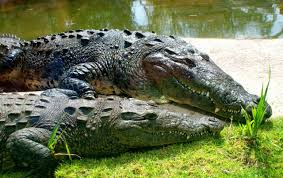
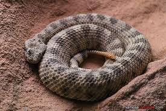
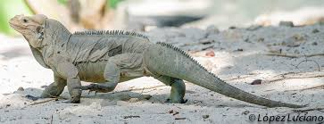

Este espacio,es un edificio especialmente dedicado a su colección de animales de sangre fría.
En él se alojan gran número de estos ejemplares, en espacios perfectamente adaptados a cada especie tanto en decoración como en acondicionamiento, con el fin de emular, del modo más exacto posible, lo que sería su hábitat natural. Podremos contemplar en este recinto ejemplares de Pitón Reticulada, Boa Constrictor, Iguana, Pogona, Varano, Serpientes del Maíz, Falsa Coral y un largo etc.


